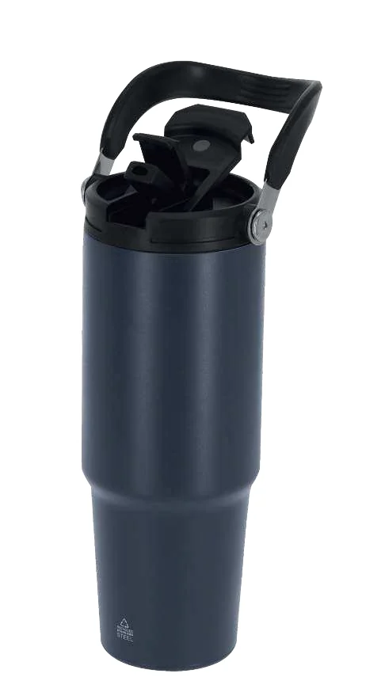
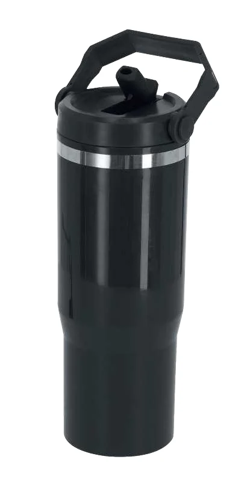
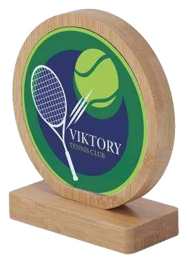

- Material : De que é feito
- Superfície : Onde se aplica a marca
- Uso : O que terá de suportar
Comece pela utilização, não pela aparência
Descreva o contacto, a limpeza, o transporte e a exposição previstos. Separe os requisitos essenciais das preferências de toque, peso ou aspeto. Um material adequado a um uso pode exigir cuidados diferentes noutro contexto. Não atribua resistência ou compatibilidade a uma família inteira de materiais.
1. Identifique a peça completa
Peça a composição do corpo e dos componentes que interessam à aplicação. Distinga material de base, pintura, verniz e outros revestimentos. Numa peça com várias superfícies, indique exatamente onde quer a marca. O nome comercial ou a aparência de madeira não substituem a ficha do artigo.
2. Compare referências equivalentes com cuidado
Chalmer 21986 e Bastien 22361 têm capacidade indicada de 900 ml. O primeiro é de aço inoxidável reciclado; o segundo é de PP. Esta comparação mostra por que a capacidade não determina o material nem a personalização. Não permite concluir qual conserva melhor a temperatura ou aceita a mesma tinta: esses requisitos precisam de confirmação.
3. Avalie superfície e processo em conjunto
Confirme a zona acessível, o revestimento e o resultado pretendido. A indicação de sublimação para Farnes 22151 é específica dessa placa; não se aplica automaticamente a todo o bambu. Uma prova no modelo certo é mais útil do que escolher uma técnica apenas pelo nome do material.
4. Peça fundamento para as alegações
Se uma propriedade reciclada ou uma alegação ambiental pesar na decisão, peça identificação do componente, âmbito e documentação correspondente. A palavra «reciclado» não demonstra, por si só, o impacto global do artigo. Compare também a utilidade prevista e as instruções de conservação, sem inventar vantagens ambientais.
Exemplos documentados no catálogo
Referências para compreender materiais e variantes. As características correspondem à edição de 2026; não indicam disponibilidade atual nem trabalhos realizados pela Nobrinde.

Chalmer 21986
- Copo térmico em aço inoxidável reciclado.
- Capacidade indicada: 900 ml; Ø 10,5 × 24,8 cm.
Compare o material, o formato e a tampa, além da capacidade. A ficha não dispensa a confirmação dos cuidados de lavagem.

Bastien 22361
- Copo descrito no catálogo como térmico, em PP.
- Capacidade indicada: 900 ml; Ø 9,1 × 25 cm.
Tem a mesma capacidade indicada para o Chalmer, mas outro material. Não se deve transferir automaticamente a solução de personalização entre os dois.

Farnes 22151
- Placa de bambu identificada expressamente como placa para sublimação.
- Dimensões indicadas: 9,5 × 12,5 × 4,5 cm.
A indicação de sublimação é específica desta referência; não prova que qualquer artigo de bambu aceite o processo. O desenho mostrado pertence à apresentação do catálogo.
Erros frequentes e como os evitar
Confundir o revestimento com o material de base
Registe ambos e confirme em qual deles ficará a marca.
Escolher por uma propriedade isolada
Compare a peça completa, o uso e os cuidados, não apenas capacidade ou composição.
Antes de avançar
- Composição e revestimento identificados.
- Zona de personalização e acabamento definidos.
- Cuidados e resistência necessários confirmados.
- Alegações relevantes sustentadas por documentação.
Fontes e âmbito
Critérios e listas de verificação são propostas editoriais. As características dos exemplos vêm do General Catalogue 2026; não confirmam disponibilidade, compatibilidade ou capacidades da Nobrinde. As fontes técnicas explicam princípios e configurações próprias, sem estabelecer requisitos universais para este trabalho.
- Chalmer 21986 — PDF p. 242; página impressa 240.
- Bastien 22361 — PDF p. 242; página impressa 240.
- Farnes 22151 — PDF p. 610; página impressa 608.
- Gravação a laser — guia técnico e respetivas fontes